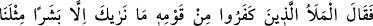
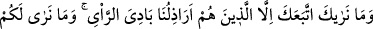
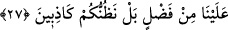

27. Kavminden ileri gelen inkârcılar dediler ki: “Biz seni de bizim gibi bir insan
olarak görüyoruz ve sana bizim basit görüşlü ayak takımımızdan başkasının
uymadığını görüyoruz. Sizin bize karşı bir üstünlüğünüzü de görmüyoruz. Bilakis
sizin yalancılar olduğunuzu düşünüyoruz.”
“Kavminden ileri gelen inkârcılar” yani kalpleri, meclisleri debdebeyle dolduran
kavminin eşrâfı. Allah Teâlâ onları kötülemek ve inkârcı olduklarını daha işin başında
tescil etmek için inkârcı olmakla tavsif etmiştir. Yoksa ileri gelenlerinden bir kısmının
inkârcı olmadığını göstermek gibi bir gâyesi yoktur.
“dediler ki: “Biz seni de bizim gibi bir insan olarak görüyoruz.” peygamberliğin
bize değil de sana verilmesini ve sana itaat etmemizi gerektirecek bir üstünlüğün yok!
Olsaydı, görürdük.
Kâşifî der ki: “Onlar insan suretlerini görüyorlar, ama eşyanın hakikatini kavramaktan
gafildirler.”
Mesnevî’de şöyle denilir:
Peygamberlerle eşit olduklarını iddia ettiler
Velileri de kendileri gibi sandılar
Dediler ki: İşte biz de insanız, onlar da insan
Biz de uyumaya ve yemeğe bağlıyız, onlar da
Onlar şunu bilmediler ki körlükleri yüzünden,
Aralarında uçsuz bucaksız bir fark vardır
Her iki çeşit arı bir yerden gıdalandıkları halde,
Birinde yalnız iğne bulunur, diğerinde bal vardır.
İki çeşit geyik otladı, su içti.
Birinden fışkı ortaya çıktı, birinden hâlis misk
Her iki kamış da bir sulaktan su içti.
Birinin içi bomboş, diğeri şekerle doludur.
Âyet işâret etmektedir ki nefis, süflîdir. Tabîatı da bakışı da süflîdir. Rûh ise ulvîdir.
Rûhun ulvî bir tabîatı, ulvî bir bakışı vardır. İşte bu ulvî rûhun özelliklerinden biri de
başkalarını da kendi âlemine dâvet etmektir. Çünkü bu ulvî bakışı sâyesindedir ki rûh,
ibâdetlerin ne kadar şerefli ve değerli olduğunu, ayrıca süflî davranışları ve onların ne
kadar değersiz ve zelil olduğunu görür. Bu ulvî tabiatından dolayı da süflî varlıkları